The Starry Night by Vincent can Gogh
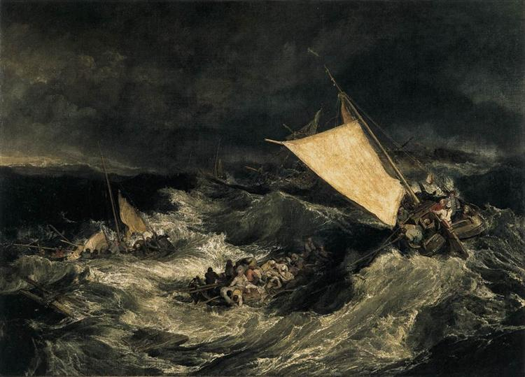
The Shipwreck of the Minotaur by J.M.W. Turner
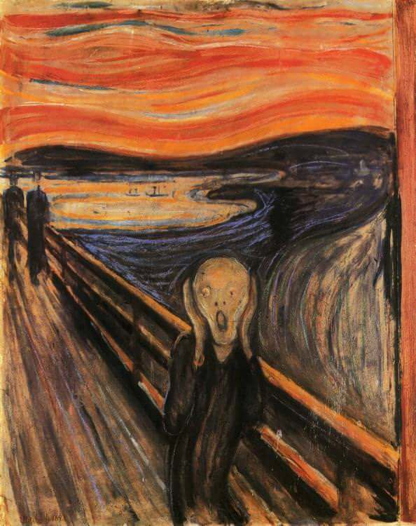
Der Scheri by Edvard Munch
Reimplement: A Neural Algorithm of Artistic Style
For this project, we used a PyTorch's pretrained VGG19 feature space. We changed all the maxpooling layers to avgpool, as described in the paper.
Here is the total feature space:
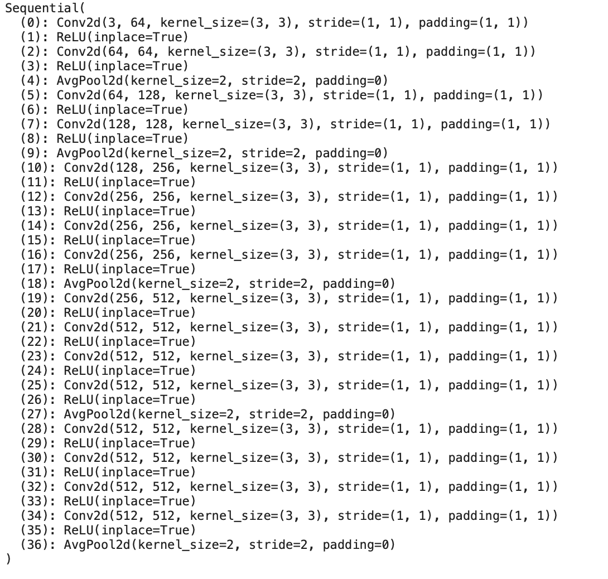
For content activation, we used the second convolutional layer in the 4th block. For style activations, we used the first convolutional layer in each of the 5 blocks. We initally used optim.lbfgs as our omtimizer but found better results once switching to optim.Adam. We also used a learning rate of 0.01 and found the best results between 1500 and 3000 iterations. A difference between our model and the proposed steps in the paper, is that we did not use a white noise image as our input. We found better results using the content image as our input into the model.
Here are the results of applying 3 different artistic styles to the content of Neckarfront in Tu ̈bingen, German
Content Image: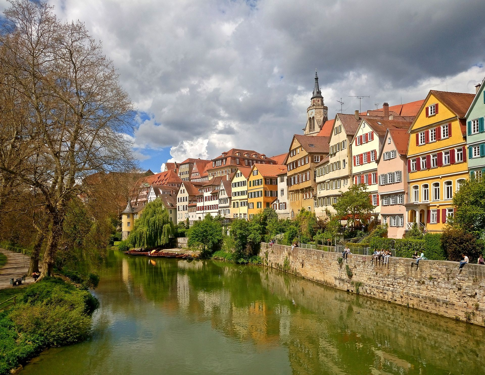
Style Images:|
The Starry Night by Vincent can Gogh |
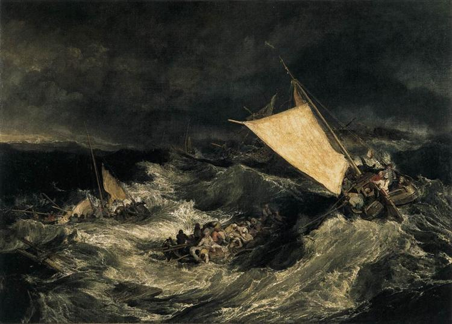 The Shipwreck of the Minotaur by J.M.W. Turner |
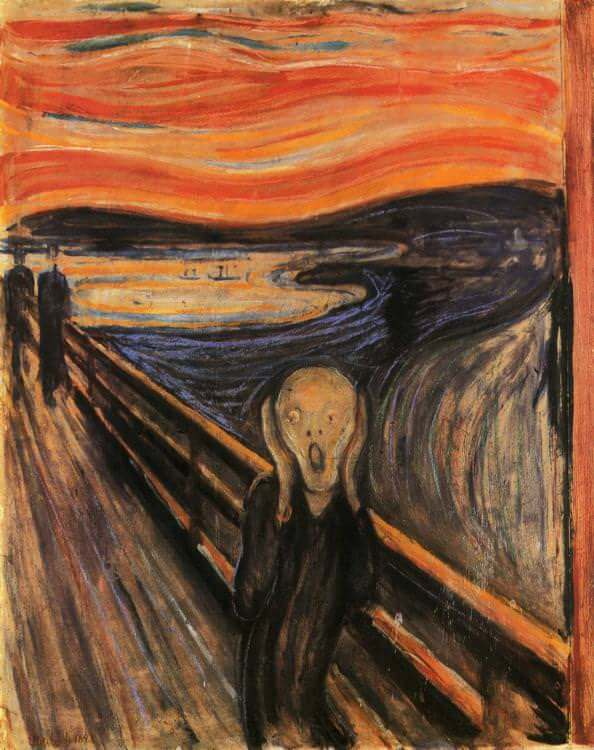 Der Scheri by Edvard Munch |
|
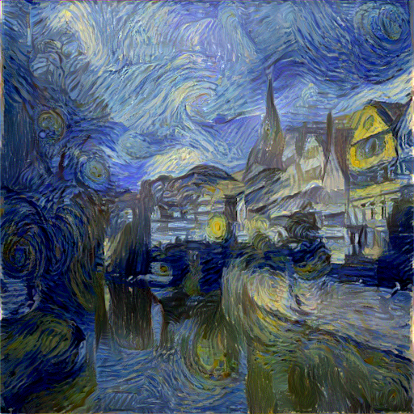 Starry Night x Neckarfront |
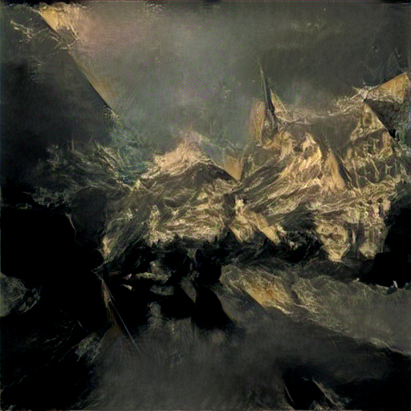 Shipwreck x Neckarfront |
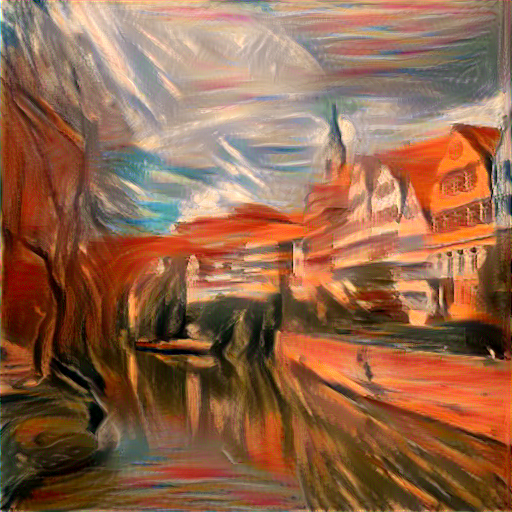 Dan Sheri x Neckarfront |
Compared to the images in the paper, we don't think we captured the style as strongly as we would have preferred, even when using an alpha/beta ratio > 10^6.
Here are the results of different styles to our own images
Content Images:|
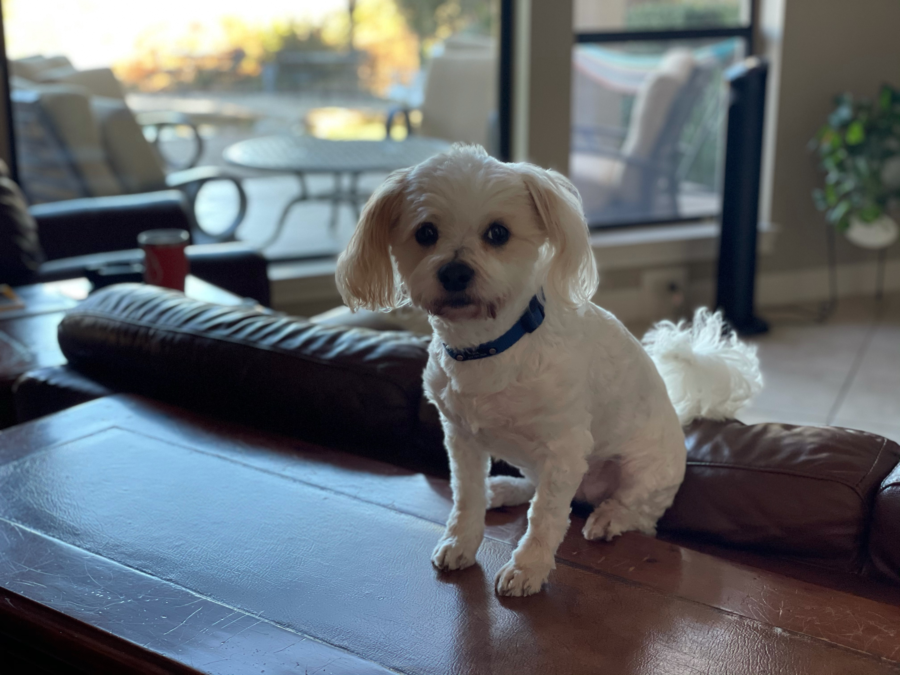 Morgan's Dog |
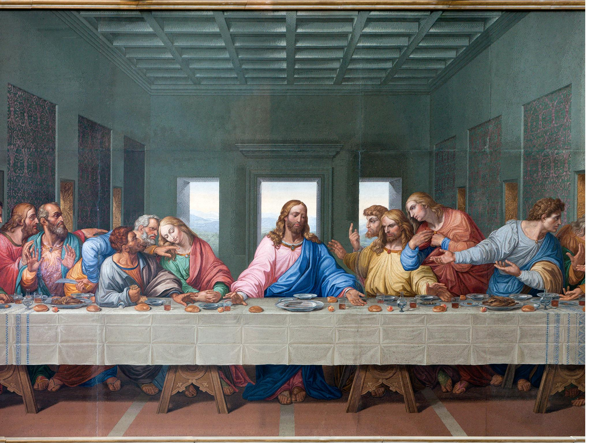 The Last Supper by Leonardo |
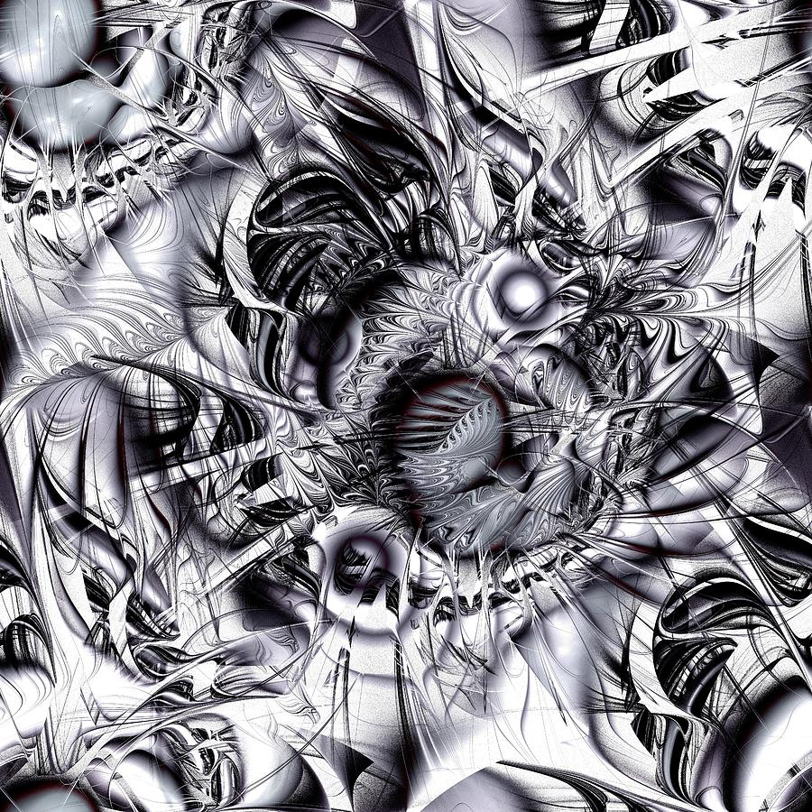 Chaotic Space by Anastasiya |
|
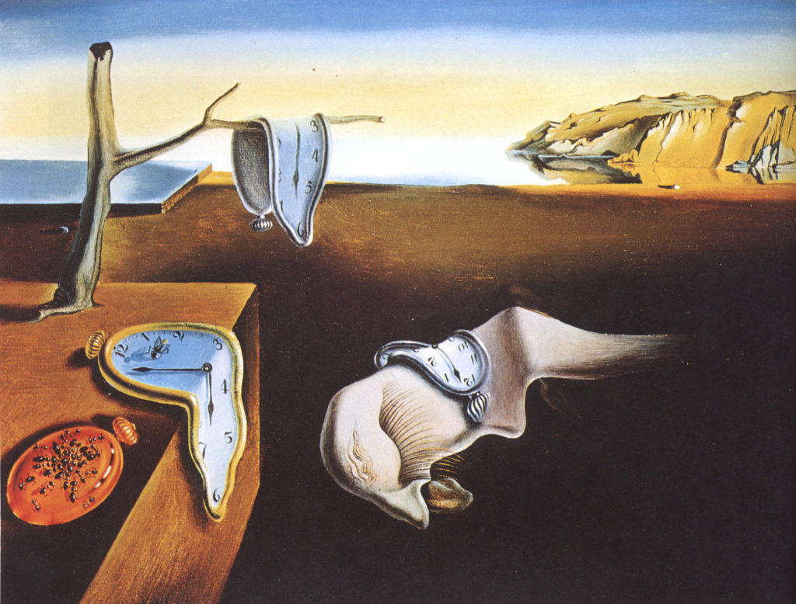 Persistence of Memory by Salvidor Dali |
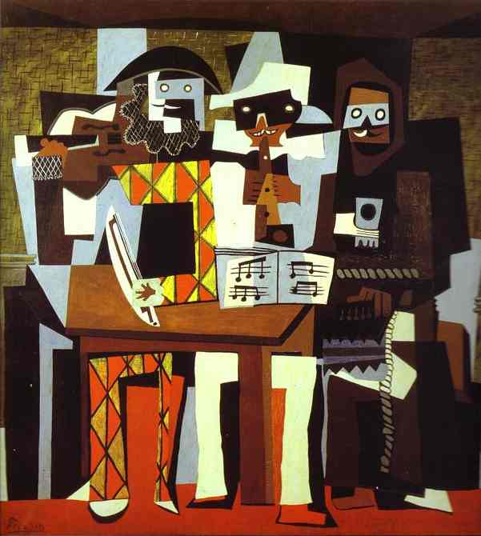 Three Musicians by Picasso |
Morgan's Dog |
|
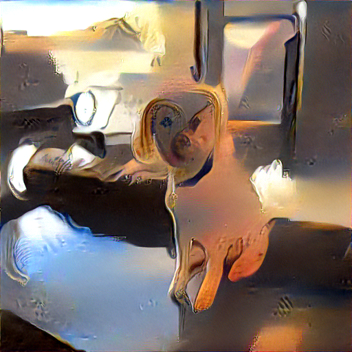 Dali x Sol/p> |
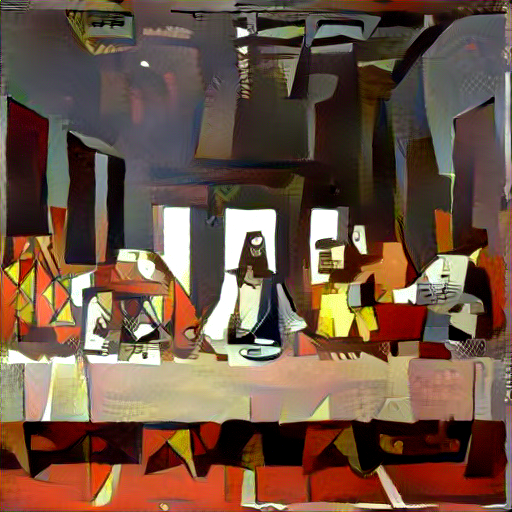 Picasso x Last Supper |
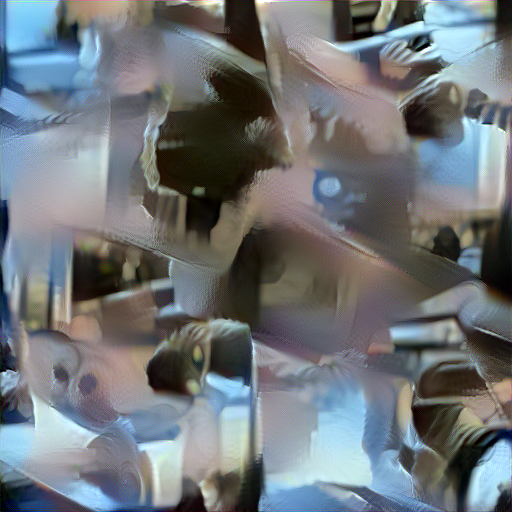 Sol x Chaos |
As you can see, the last image does not quite work. We believe this is caused by having too much chaos imbedded in the image, and our model cannot pick out and discern these nuances well. In addition to this. The "style" image has no real "style" to it, making it harder to apply to another image